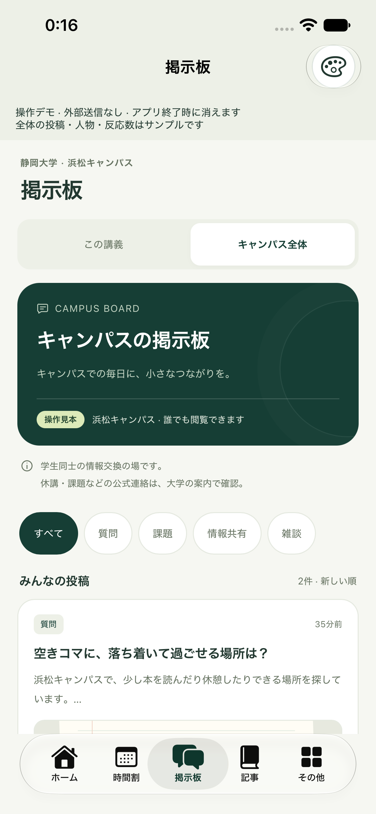
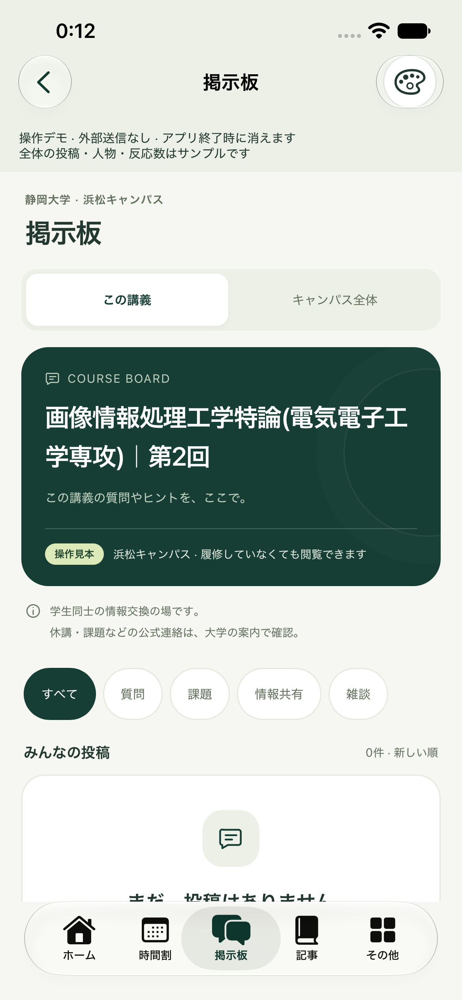
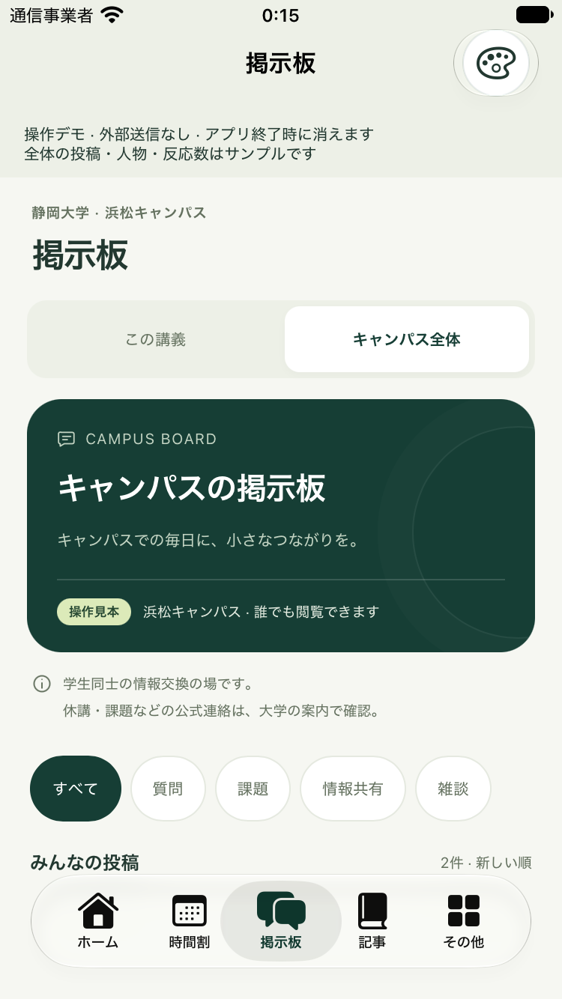

今回の修正
ホーム / 時間割 / 掲示板 / 記事 / その他。既存の画面を保ったまま、これまで確認した掲示板のデザインをiPhoneアプリへ組み込みます。
下のタブから掲示板を開く。
キャンパス全体の一覧とタグ、投稿詳細を同じ4テーマで表示します。
講義の話へ、そのまま進む。
講義詳細から対応する掲示板へ進み、戻ると元の詳細へ。実際の講義名とIDを使い、他の講義の投稿を混ぜません。
投稿と返信を、小さいアイコンで。
ペンネーム・匿名、画像追加・圧縮・拡大、投稿・返信を試せるようにします。入力途中の内容はタブ移動で失いません。
操作デモであることを明確にする。
端末内のセッションだけで動作します。投稿は外部へ送られず、終了すると消えます。公開配信・アカウント・運営機能は今回追加しません。
今の予定や記事をそのまま使う。
既存の予定・画像・記事下書きと保存形式を維持します。
シミュレーターでも確かめる。
掲示板一覧・講義からの往復・再起動後入口・小画面を確認し、同じ本体アプリを更新します。
今回はアプリ内の掲示板画面と導線の統合です。
公開配信・認証・運営機能は追加せず、既存の予定・記事保存を維持します。
未解決事項
今回の操作デモ統合を止める事項はありません。学生同士の公開配信は別途サービスとしての設計・実装が必要です。
アプリでの確認結果
掲示板43項目・Core25件・既存記事回帰とSimulatorビルドに成功。既存データ計6ファイルを2台で照合しました。投稿・返信は外部へ送られないセッション内デモです。
講義別の正しい空状態、詳細への復帰、返信入力、小画面と再起動後の入口を確認しました。実Photos選択から圧縮までの操作、全IME・VoiceOver・Dynamic Typeの組合せは未確認です。


